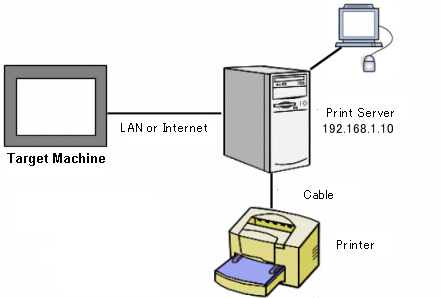

|
|
|
|
|
|
|
|
When you want to print through the Internet or LAN, use an Internet Printing Protocol (IPP) connection. To print using IPP, you must have a print server. To install the print server software, you will need your Windows installation CD or DVD for either WinXP, Vista, Win7, or Windows Server Versions. Contact your IT department to help you install and configure the print server.

Print server |
|
Computer to confirm connection |
Use this computer to check the printer's configuration. This computer must be on the same network as the print server, and Internet Explorer must be installed. |
Printer |
EPSON Stylus C61 series |

When connecting the print server and target machine to the network, check the security policy.
Steps |
|
|
|
|
|
|
|
|
|
|
|
|
In the Windows Start menu, select Settings and then Control Panel. In the Control Panel, select Add/Remove Programs.
Select Add/Remove Windows Components.
In the Windows Components Wizard, select Internet Information Services (IIS), and click Next.
Install IIS from the Windows OS CD-ROM.
In the Windows Start menu, select Settings and then Control Panel. In the Control Panel, select Administrative Tools and then Internet Services Manager.
In Internet Services Manager, right-click Default Web Site and select Properties.
In the Web Site tab of the Default Web Site Properties dialog box, enter the printer server's IP Address and TCP Port.
Configure Anonymous Access so users can connect to the print server without using a password. Click the Directory Security Tab. Under Anonymous access and authentication control, click the Edit button.
Make sure Anonymous access is enabled. Click OK to close the Authentication Method dialog box. Click OK again to close the Default Web Site Properties dialog box.
In Internet Services Manager, right-click Default Web Site, and click Start to begin IIS.
To obtain printer information connected to the print server, start IE on a computer on the same network.
In the Windows Start menu, select Settings and then Printers. In the Printers dialog box, right-click the Printer icon on the print server and select Sharing.
Start IE on a computer that is on the same network as the print server.
Type the following address in IE:
http://<print server's IP address or host name>:<port number>/printers/
In this example, the following address is used: http://192.168.1.10:1024/printers/
In IE, select a printer that is connected to the printer server in the list.
Select Property and check the Network Name.
After collecting the printer information, configure the printer in Vijeo-Designer's Printer Setup dialog box.
In the Project tab of the Navigator window, select the target.
In the target's Property Inspector, set the Printer property to Enable and select EPSON ESC/P for the Printer Type property.
In the Printer Setup property, click  .
.
In the Printer Setup dialog box, select IPP as the connection method, and set up the other properties as follows:
IP Address |
Enter the printer server's IP address. |
Port No. |
Enter the printer server's port number. |
Time Out |
Enter the printing timeout in seconds.
|
Printer URI |
Enter the network name of the printer server set up in IIS. The network name should be in the form: http://network_name/printers/printer_share_name/.printer. For example: http://192.168.1.10/printers/StyC61/.printer |